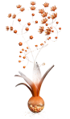
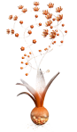

FOCUS MONONOVOUS is a detailed and dignified creative species that, like Novo Gregarious, travels streams and rivers in search of novel, unconstrained environments. Single-minded and precise, Focus Mononovous requires calm and quiet to focus its energy into growing a colorful, perfectly-formed bloom. Although many creative species can thrive in indoor environments, Focus Mononovous grows best in the wild, unconstrained and free. Those who find a Focus Mononovous in the wild should be careful not to distract it, otherwise it may have to start its flowering process over again.

 
